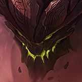

核心裝備
 寒冰霸拳
寒冰霸拳7.2b 降價並提高生命，第一次大裝更快成形；技能後普攻的緩速也很適合黏住目標。
 荊棘之甲
荊棘之甲對多射手或高吸血陣容同時提供高護甲與重創。
 冰霜之心
冰霜之心大量護甲與降攻速，搭配三技能讓普攻核心非常難輸出。
 自然之力
自然之力面對法傷陣容補高魔抗與跑速，讓開大後不會被 AP 直接融掉。
 雅瑪蘭守護像
雅瑪蘭守護像雙抗疊起來後大幅提高後期進場容錯，適合扛完整團戰。

Malphite · 坦克強開／反射手型前排
ARAM 墨菲特建議以坦克為主，不需要每局都走 AP 一波流。你的大絕本身就足以威脅後排，坦裝能讓你撞完後繼續用三技削攻速、卡位置與吃第二輪傷害。
本站評級理由：勢不可擋在狹窄單線幾乎永遠有多人開戰角度，坦裝墨菲特又能在撞完後持續站在前排壓攻速；7.2b 寒冰霸拳降價並加生命，讓第一件坦裝成形更快。
7.2a／7.2b 官方近期 ARAM 調整未列出墨菲特新的模式百分比變更；7.2b 寒冰霸拳價格 3100→3000、生命 250→300。
7.2b 降價並提高生命，第一次大裝更快成形；技能後普攻的緩速也很適合黏住目標。
對多射手或高吸血陣容同時提供高護甲與重創。
大量護甲與降攻速，搭配三技能讓普攻核心非常難輸出。
面對法傷陣容補高魔抗與跑速，讓開大後不會被 AP 直接融掉。
雙抗疊起來後大幅提高後期進場容錯，適合扛完整團戰。

敵方物理與普攻傷害多時先做鍍板鋼蓋，提升進場坦度。

升級三級鞋後提高物防、普攻減傷並提供物理護盾，讓大絕進場後更能承受集火。

ARAM 近距離拉扯頻繁，能在坦克對撞時持續疊生命與補傷害。

大絕擊飛能穩定觸發護盾，提高第一波進場容錯。

降低進場後瞬間吃滿爆發的風險。

單線持續吃兵與團戰，額外生命能穩定成長。

墨菲特的價值高度集中在大絕，縮短大招循環對 ARAM 特別重要。

沒有大絕或需要微調距離時補進場，也能用來脫離第二輪集火。

撞進後排後壓低敵方主 C 傷害，讓自己與隊友更容易完成跟進。
1 技 > 3 技 > 2 技
ARAM 開局三個基礎技能各點 1 級，之後主升 1 技維持遠距消耗與追擊、次升 3 技強化範圍傷害與降攻速；大絕能點就點。
沒有大絕前先靠被動盾與 1 技換血，不要無理由走進五人的技能範圍。若敵方多射手，3 技的降攻速要留給對方真正開始輸出的時候。
有大絕後先看隊友距離再撞。最理想是命中一到兩個核心輸出，而不是為了人數撞三個坦克；撞完立刻 3 技降攻速，再用身體卡住後排撤退路線。
你是開戰按鈕也是前排，不必每次都秒人。敵方站位分散時可以先不開大，逼他們一直保持距離；一旦後排重疊或關鍵位移交掉，再用勢不可擋直接決定團戰。
 蘭頓之兆
蘭頓之兆敵方暴擊射手很多
 好戰者鎧甲
好戰者鎧甲雙方長時間拉扯
 黎明法衣
黎明法衣隊友能快速跟控制
看遊戲卡片下方分類 → 點相同分類 → 看左側 S+／S／A。
大絕擊飛與一技能緩速能穩定觸發控制相關效果。
生命、雙防與體型能直接提高前排容錯，部分體型卡還會放大控場或傷害。
系列偏坦度、貼身反制與位移互動，符合墨菲特強開後黏人的玩法。
被動會固定產生護盾，因此護盾免控與護盾觸發效果容易利用。
一、三技能與大絕能穩定命中，但技能型卡的收益差距較大。
大絕與近身技能能利用其中部分坦度、技能連動與大絕增幅。
7.2b ARAM 墨菲特攻略：官方 7.2b 強化寒冰霸拳的價格與生命；坦克核心與符文交叉參考 WildRiftFire 7.2b，再依 ARAM 大絕高價值與持續前排需求調整。
ARAM 使用獨立於召喚峽谷的資料集；本站會把官方模式平衡、單線 5v5 特性與出裝／符文適配分開判斷，而不是直接複製峽谷配置。